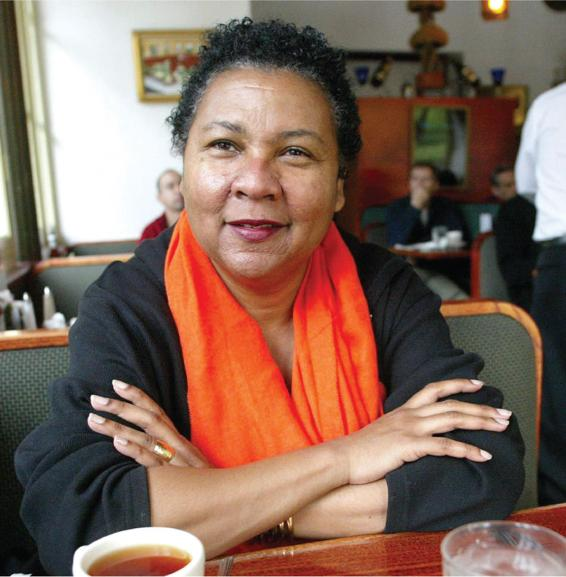

The feminist movement has given rise to a large body of feminist theory that attempts to explain gender inequalities and set forth agendas for overcoming those inequalities. While feminist writers are all concerned with women’s unequal position in society, their explanations for it vary substantially. There is no one “feminism.” Rather, different schools cite a variety of deeply embedded social processes such as sexism, patriarchy, capitalism, and racism. The following sections look at the arguments behind five main feminist perspectives—liberal, radical, socialist, Black, and postmodern feminism.
Liberal Feminism
Liberal feminism sees gender inequalities as rooted largely in social and cultural attitudes. Unlike radical feminists, liberal feminists do not see women’s subordination as part of a larger system or structure. Instead, they identify many separate factors that contribute to inequalities—for example, sexism and discrimination in the workplace, in educational institutions, and in the media. They focus on establishing and protecting equal opportunities for women through legislation and other democratic means. Liberal feminists actively supported legal advances such as the Equal Pay Act of 1963 and the Civil Rights Act of 1964 arguing that mandating equality in law is essential to eliminating discrimination against women. Because liberal feminists seek to work through and within the existing political and economic systems to bring about reforms in a gradual way, they are more moderate in their aims and methods than radical feminists, who call for an overthrow of the existing system (Tong, 2009).
While liberal feminists have contributed greatly to the advancement of women over the past century, critics charge that they have been unsuccessful in dealing with the root cause of gender inequality and do not acknowledge the systemic nature of women’s oppression in society (Bryson, 1999). Critics say that by focusing too much on the independent deprivations women suffer—sexism, discrimination, the glass ceiling, unequal pay—liberal feminists draw only a partial picture of gender inequality. Radical feminists accuse liberal feminists of encouraging women to accept an unequal society and its competitive character.
Radical Feminism
At the heart of radical feminism is the belief that men are responsible for, and benefit from, the exploitation of women. The analysis of patriarchy—the systematic domination of females by males—is of central concern, being viewed as a universal phenomenon that has existed across time and cultures. Radical feminists identify the family as one of the primary sources of women’s oppression. They argue that men both exploit women by relying on their unpaid domestic labor in the home and, as a group, deny women access to positions of power and influence in society (Tong, 2009).
Radical feminists differ in their interpretations of the basis of patriarchy, but most agree that it involves some form of appropriation of women’s bodies and sexuality. Shulamith Firestone (1970) argued that because men control women’s roles in reproduction and child-rearing, women become dependent materially on men for protection and livelihood. This “biological inequality” is socially organized in the nuclear family. Firestone argued that women can be emancipated only through the abolition of the family and the power relations that characterize it.
Other radical feminists point to male violence against women as central to male supremacy. In this view, intimate partner violence, rape, and sexual harassment are all part of the systematic oppression of women, rather than isolated cases of pathological or criminal perpetrators. Even interactions in daily life—such as nonverbal communication, patterns of listening and interrupting, and women’s sense of comfort in public—contribute to gender inequality. Moreover, popular conceptions of beauty and sexuality are imposed on women by men to produce a certain type of femininity. For example, social and cultural norms emphasizing a slim body, youthful face, and caring, nurturing attitude toward men perpetuate women’s subordination. The objectification of women through the media, fashion, and advertising turns women into sexual objects whose main role is to please and entertain men (Kilbourne, 2010).
Radical feminists do not believe that women can be liberated from sexual oppression through legislative reforms or gradual attitudinal change. Because patriarchy is a systemic phenomenon, they argue, gender equality can be attained only by overthrowing the patriarchal order.
In asserting that “the personal is political,” radical feminists have drawn attention to the many linked dimensions of women’s oppression. Their emphasis on male violence and the objectification of women has brought these issues into the heart of mainstream debates about women’s subordination.
Many objections can be raised to radical feminist views. A key objection is that the concept of patriarchy is inadequate as a general explanation for women’s oppression (Tong, 2009). Radical feminists have tended to claim that patriarchy has existed throughout history and across cultures—that it is a universal phenomenon. Critics argue, however, that the concept of patriarchy as a universal phenomenon does not leave room for historical or cultural variations. It also ignores the important influence of race, class, and ethnicity on the nature of women’s subordination; in short, it fails to recognize that not all men have equal power to act as oppressors, and not all women are equally subjugated. In fact, seeing patriarchy as a universal phenomenon risks biological reductionism—attributing all the complexities of gender inequality to a simple distinction between men and women.
Socialist Feminism
Radical feminism maintains that the objectification of women in advertising contributes to gender inequality by turning women into sexual objects for men’s pleasure.
Developed in the 1970s, socialist feminism incorporates key themes of Marxist theory, which we introduced in Chapter 1. Like Marxist theory, socialist feminism argues that capitalist society is oppressive toward ethnic minorities, the working class, and the poor. Like radical feminism, it also recognizes the fundamental oppression of women in patriarchal societies. Bringing these two themes together, socialist feminism focuses on the ways that gender and social class intersect. Importantly, adherents of this perspective depart from Marxist theorists because they believe that dismantling the capitalist hierarchical system is not sufficient to eradicate inequalities; gendered systems of stratification also must be eradicated (Martin, 1986).
Socialist feminists depart from other types of feminists in important ways. They challenge liberal feminists’ vision that equality for women in all institutions of society, including government, law, and education, is possible through policy reforms. Socialist feminists reject the notion that true equality is possible in a society whose social and economic structures are fundamentally flawed. They depart from radical feminists, however, because socialist feminists believe that women should work with men to fight class oppression. Socialist feminists do not generally believe that sex and the patriarchy are the sole roots of oppression; rather, gender is just one of several axes of oppression (Holmstrom et al., 2002).
Black Feminism and Transnational Feminism
Do the versions of feminism just described apply equally to the experiences of both White women and women of color? Many Black feminists and feminists from the global south claim they do not. They argue that the main feminist schools of thought address the dilemmas of White, predominantly middle-class women living in industrialized societies and in traditional two-parent families, and that it is not valid to generalize theories about women’s subordination from the experience of a specific group. Moreover, the very idea of a unified form of gender oppression that all women experience equally is problematic (Collins, 2008) and neglects the concept of intersectionality, or the recognition that challenges facing women of color are often distinct from those facing White (and especially White middle-class) women (McCall, 2005).
Gloria Jean Watkins, better known as bell hooks, has written extensively on the distinct challenges facing women of color.
Dissatisfaction with existing forms of feminism has led to the emergence of Black feminism, which concentrates on the problems facing Black women. Black feminist writings emphasize aspects of the past that inform current gender inequalities in the Black community: the legacy of slavery, segregation, and the civil rights movement. They point out that early Black suffragettes supported the campaign for women’s rights but realized that the question of race could not be ignored because Black women were discriminated against on the basis of both race and gender. In recent years, Black women have not been central to the women’s liberation movement in part because their race informed their identities and political allegiances more than their gender did (Collins, 2008).
Author, feminist, and social activist bell hooks argues that explanatory frameworks favored by White feminists—for example, the view of the family as a mainstay of patriarchy—may not apply in Black communities, where the family often is headed by a woman and provides a safe, supportive haven against racism. In other words, the oppression of Black women may be found in different locations than that of White women.
Black feminists contend that any theory of gender equality that does not take racism into account cannot adequately explain Black women’s oppression. Likewise, social class cannot be neglected. Some Black feminists hold that the strength of Black feminist theory is its focus on the interplay among race, class, and gender concerns. When these three factors interact, they reinforce and intensify one another (Brewer, 1993).
Transnational feminism, by contrast, focuses primarily on intersections among nationhood, race, gender, sexuality, and economic exploitation against the contemporary backdrop of global capitalism. This perspective recognizes that global processes, including colonialism, racism, and imperialism, shape gender relations and hierarchies in powerful ways (Mohanty, 2003). Pioneers of transnational feminism recognized that the key themes of liberal feminism, such as concerns about equal pay for equal work or the division of household labor, were not relevant for many women in the global south. Scholars working in this tradition often have a strong human rights orientation and see research as integral to social change. For instance, by understanding the processes through which female agricultural workers in Brazil are subordinated, transnational feminists can work to increase these women’s bargaining power (Thayer, 2010).
Postmodern Feminism
Like Black feminism, postmodern feminism challenges the idea that all women share a single basis of identity and experience. (Postmodern approaches in sociology were introduced in Chapter 1, and it may be helpful to review that section.) This strand of feminism draws on the cultural phenomenon of postmodernism in the arts, architecture, philosophy, and economics. Postmodern feminists reject the claim that there is a grand theory that can explain the position of women in society or that there is any universal category of “woman.” Consequently, these feminists reject the accounts others give to explain gender inequality—such as patriarchy, race, or class—as “essentialist” (Beasley, 1999).
Instead, postmodern feminism encourages the acceptance of many different standpoints, representing very different experiences (heterosexuals, lesbians, Black women, working-class women, and so on). The “otherness” of different groups and individuals is celebrated in all its diverse forms. Emphasis on the positive side of otherness is a major theme in postmodern feminism and symbolizes plurality, diversity, difference, and openness: There are many truths, roles, and constructions of reality (Tong, 2009).
Postmodern feminism is said to have the most difficult relationship with the strands of feminism just discussed (Tong, 2009). This is largely because of its belief that many feminists are mistaken in assuming that it is possible to provide overarching explanations for women’s oppression and to find steps toward its resolution.
Table 10.1APPLYING SOCIOLOGY TO GENDER
CONCEPT
APPROACH TO UNDERSTANDING GENDER
CONTEMPORARY APPLICATION
Social Constructionist Approaches
Gender identities are not predetermined but emerge in relation to perceived sex differences in societies and cultures, which in turn shape and even perpetuate those differences.
A husband who loses his job may refuse to do housework as a way to “do gender” and reassert his masculine identity. This places a burden on his wife and perpetuates gendered social roles.
Socialization Approaches
Gendered identities and behaviors are learned, via processes of reinforcement and imitation—similar to other forms of learning.
A young girl who likes to play football is admonished to “act more ladylike.” She may learn to stop playing in traditionally masculine sports and seek out more traditionally feminine ones.
Functionalist Approaches
Gender differences and, specifically, men’s and women’s specialization in different tasks, contribute to social stability and integration.
In the mid-twentieth century, many Americans believed it was “best” for the family and an efficient division of labor if the husband was the primary breadwinner and women were the primary caregiver.
Feminist Approaches
Everyday gender differences have their roots in men’s and women’s unequal positions in society. Social changes must focus on eradicating women’s disadvantages. Precisely how these differences can be remedied, and other intersecting sources of differences like race, are emphasized in subtypes of feminist approaches including liberal, radical, socialist, Black, transnational, and postmodernist.
Feminist social policies hold that paying men and women equally for equal work, paying women for care work, and promoting equity in the workplace and education are ways to move toward gender equality in society.
CONCEPT CHECKS
Contrast functionalist and feminist approaches to understanding gender inequality.
What are the key ideas of liberal feminism? What are criticisms of this perspective?
What are the key ideas of radical feminism? What are criticisms of this perspective?
How do the key ideas of socialist feminism challenge the main themes of liberal and radical feminism?
Do you think that postmodern feminism is incompatible with liberal, radical, and Black feminist perspectives? Why or why not?
Socialist Feminism
Developed in the 1970s, socialist feminism incorporates key themes of Marxist theory, which we introduced in Chapter 1. Like Marxist theory, socialist feminism argues that capitalist society is oppressive toward ethnic minorities, the working class, and the poor. Like radical feminism, it also recognizes the fundamental oppression of women in patriarchal societies. Bringing these two themes together, socialist feminism focuses on the ways that gender and social class intersect. Importantly, adherents of this perspective depart from Marxist theorists because they believe that dismantling the capitalist hierarchical system is not sufficient to eradicate inequalities; gendered systems of stratification also must be eradicated (Martin, 1986).
Socialist feminists depart from other types of feminists in important ways. They challenge liberal feminists’ vision that equality for women in all institutions of society, including government, law, and education, is possible through policy reforms. Socialist feminists reject the notion that true equality is possible in a society whose social and economic structures are fundamentally flawed. They depart from radical feminists, however, because socialist feminists believe that women should work with men to fight class oppression. Socialist feminists do not generally believe that sex and the patriarchy are the sole roots of oppression; rather, gender is just one of several axes of oppression (Holmstrom et al., 2002).